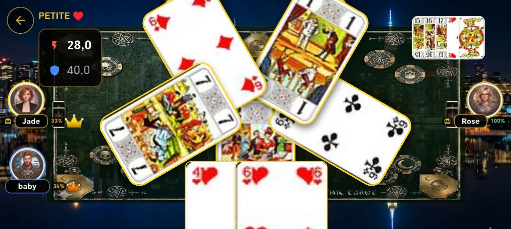
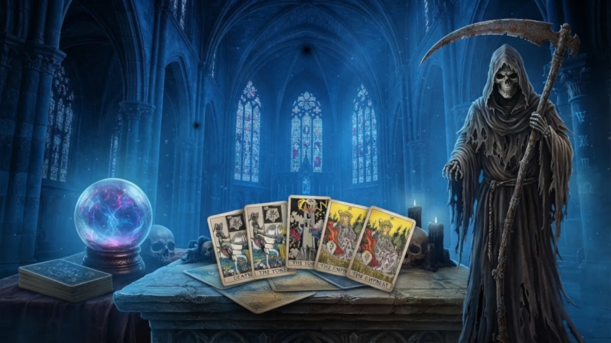
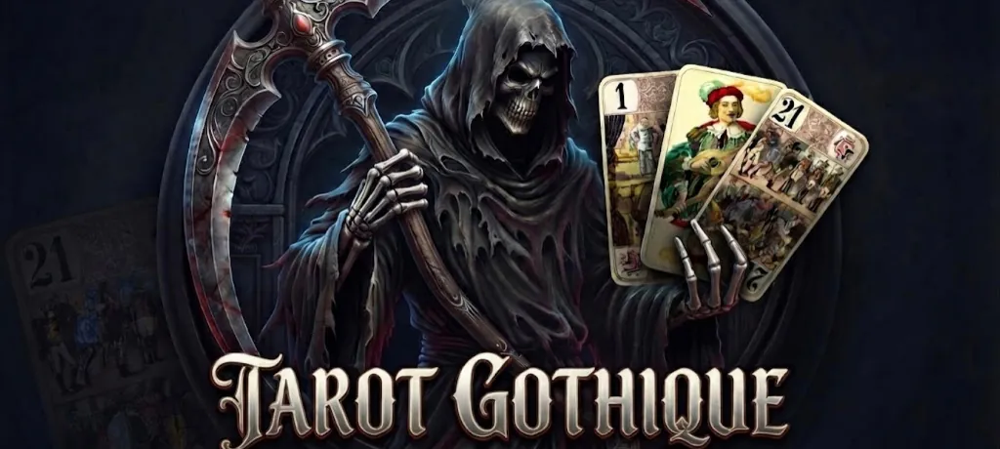
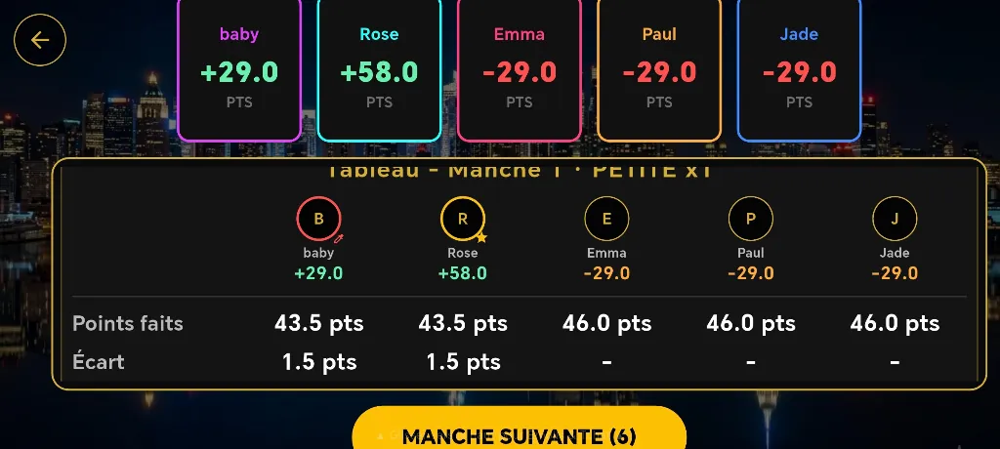
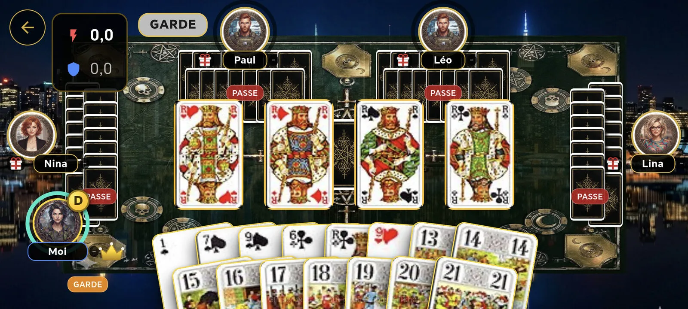
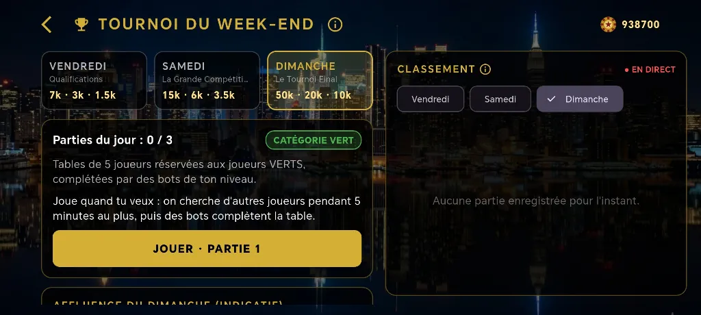

Jeu de tarot - règles
Distribution, enchères, chien, écart et jeu de la carte : le déroulement complet d'une donne, sans jargon inutile.

Le jeu de tarot français à 3, 4 ou 5 joueurs, expliqué pas à pas et jouable gratuitement : dans votre navigateur, sur mobile, sur Linux ou sur Windows.
Le jeu de tarot est l'un des jeux de cartes les plus pratiqués en France. On le joue en famille, au club, au café, et de plus en plus sur écran. Le charme du jeu de tarot tient à un mélange rare : la chance de la donne compte, mais la réflexion compte davantage. Chaque partie de jeu de tarot demande de lire le jeu des autres, de compter les atouts tombés et de choisir le bon moment pour prendre un risque.
Ce site rassemble l'essentiel pour bien démarrer : les règles du jeu de tarot, la valeur des cartes, les contrats, le calcul des points et les conseils qui font progresser. Il présente aussi Tarot Gothique 2026, un jeu de tarot gratuit dans une ambiance sombre et soignée, que vous pouvez lancer tout de suite pour mettre la théorie en pratique. Que vous découvriez le jeu de tarot ou que vous y jouiez depuis des années, vous y trouverez de quoi affiner votre jeu.

Distribution, enchères, chien, écart et jeu de la carte : le déroulement complet d'une donne, sans jargon inutile.

Les 78 cartes, les trois Bouts, les figures et leur valeur au moment de compter les plis.

Petite, Garde, Garde sans, Garde contre : ce que chaque annonce change au chien et au score.

Seuils selon les Bouts, écart, multiplicateur, primes : le calcul d'une donne expliqué avec un exemple.

L'appel du roi, le partenaire secret et la répartition des points quand la table est complète.
Votre jeu de tarot hors ligne contre l'IA ou en ligne contre de vrais joueurs, avec un tutoriel pour la première donne.

Tables publiques, salon privé entre amis et tournoi du week-end avec classement.
Un jeu de tarot pensé pour le pouce, en portrait comme en paysage, sur téléphone et tablette.
Une donne de jeu de tarot suit toujours le même fil. Une fois ces cinq étapes du jeu de tarot comprises, le reste devient une affaire de pratique.
Deux règles maison dans Tarot Gothique. L'Excuse revient au joueur qui l'a posée, sans échange contre une petite carte, sauf au dernier pli, où elle va au gagnant du pli (hors chelem). Et à 5 joueurs, la couleur du roi appelé ne peut pas être jouée au premier pli, sauf si celui qui entame pose directement ce roi. Ces choix sont assumés : ils sont expliqués avant la première donne, pour que chacun connaisse la version du jeu de tarot à laquelle il joue.
Un jeu de tarot compte 78 cartes : 56 cartes de couleur (cœur, carreau, trèfle, pique, avec quatre figures chacune), 21 atouts numérotés et l'Excuse. Dans le jeu de tarot, trois cartes ont un rôle à part : le Petit (l'atout 1), le 21 d'atout et l'Excuse. On les appelle les Bouts, et ce sont elles qui fixent la difficulté du contrat.
| Carte | Valeur |
|---|---|
| Chaque Bout (Petit, 21, Excuse) | 4,5 points |
| Roi | 4,5 points |
| Dame | 3,5 points |
| Cavalier | 2,5 points |
| Valet | 1,5 point |
| Toute autre carte | 0,5 point |
Au total, les 78 cartes du jeu de tarot valent 91 points. C'est pourquoi le preneur qui n'a aucun Bout doit en réunir 56, soit nettement plus de la moitié.
Au jeu de tarot, le contrat annoncé pendant les enchères fixe deux choses : ce que devient le chien, et par combien on multiplie le résultat de la donne. Plus l'annonce est haute, plus le gain est fort… et plus la chute coûte cher. Bien choisir son contrat est sans doute la compétence la plus utile du jeu de tarot.
| Contrat | Le chien | Multiplicateur |
|---|---|---|
| Petite | Retourné, pris par le preneur | × 1 |
| Garde | Retourné, pris par le preneur | × 2 |
| Garde sans | Non retourné, compté pour le preneur | × 4 |
| Garde contre | Non retourné, compté pour la défense | × 6 |
À cinq, le preneur ne joue pas seul : après les enchères, il appelle un roi. Celui qui détient ce roi devient son partenaire, sans le dire. Personne ne connaît les équipes avant que le roi soit joué : c'est ce qui rend le jeu de tarot à cinq si passionnant dès les premiers plis. Si le preneur détient lui-même le roi qu'il appelle, il joue seul contre quatre.
À la fin d'une donne de jeu de tarot, le preneur additionne les points de ses plis, écart compris (et ceux de son partenaire à 5 joueurs). Il compare ce total au seuil fixé par ses Bouts : 56 points sans Bout, 51 avec un, 41 avec deux et 36 avec les trois. La différence entre son total et le seuil s'appelle l'écart.
La donne vaut alors (25 + écart) × multiplicateur du contrat. Le Petit au bout ajoute 10 points avant la multiplication pour le camp qui remporte le dernier pli avec le Petit.
Exemple à 4 joueurs. Le preneur annonce une Garde, remporte 2 Bouts et totalise 47 points. Avec deux Bouts, il lui en fallait 41 : l'écart est de 6. La donne vaut (25 + 6) × 2 = 62 points. Chaque défenseur perd 62 points et le preneur en gagne 186.
Au jeu de tarot, un joueur riche en atouts peut les montrer avant de jouer sa première carte : c'est la poignée. Il en faut 10 pour une simple à 4 joueurs (13 pour une double, 15 pour une triple), 13, 15 et 18 à 3 joueurs, 8, 10 et 13 à 5 joueurs, l'Excuse comptant comme un atout. La prime vaut 20, 30 ou 40 points, n'est pas multipliée et revient au camp qui gagne la donne. Le chelem, enfin, consiste à remporter tous les plis : 400 points s'il est annoncé et réussi, 200 s'il est réalisé sans annonce, et 200 points de pénalité s'il est annoncé puis manqué.
Le plus efficace reste de jouer souvent au jeu de tarot. Le jeu de tarot en solo contre l'IA permet d'enchaîner les donnes sans attendre personne et d'essayer des prises risquées sans conséquence.
Pour aller plus loin, chaque point délicat du jeu de tarot a son guide détaillé, avec des exemples chiffrés.
Petit, 21 et Excuse : seuils de points, Petit au bout, réflexes.
Quand la jouer, à qui elle revient, le piège du dernier pli.
Enchères, chien, écart et calcul des points pour chaque contrat.
Distribution, poignées, appel du Roi et partage des points.
Tarot Gothique 2026 est un jeu de tarot gratuit, et il est facile de savoir ce qui l'est exactement.
Le détail complet, le déroulement d'une partie de tarot en ligne et les réponses aux questions sur la publicité sont sur la page jeu de tarot gratuit en ligne.
Tarot Gothique 2026 propose le même jeu de tarot partout. Votre jeu de tarot et vos progrès suivent votre compte d'un appareil à l'autre.
Le jeu de tarot sans téléchargement ni inscription pour jouer contre l'IA. Gratuit.
Jouer en ligneL'application de jeu de tarot pour smartphone et tablette, disponible gratuitement sur Google Play, pour Android 7.0 et plus.
Voir sur Google PlayUne archive à décompresser, prête à lancer sur la plupart des distributions. Gratuit.
Télécharger pour LinuxL'édition complète du jeu de tarot pour PC : 9,90 € en paiement unique, sans abonnement.
Voir l'édition WindowsOffres du moment. L'édition Windows inclut 100 000 jetons pour le mode en ligne. Sur toutes les plateformes, un bonus quotidien vous attend à chaque connexion. Les annonces de tournois de jeu de tarot et les nouveautés sont publiées en premier sur notre serveur Discord, où vous pouvez aussi trouver des partenaires de jeu et signaler un bug.
Oui. Les versions navigateur, Android et Linux sont gratuites, et les parties de jeu de tarot en solo contre l'IA ne demandent ni compte ni jetons. L'édition Windows coûte 9,90 € en paiement unique. La boutique intégrée est facultative : elle vend des jetons et des éléments de décor (dos de cartes, tapis).
Une partie de jeu de tarot se joue à 3, 4 ou 5 joueurs. Si vous êtes moins nombreux, l'IA complète la table.
Le preneur doit réunir 56 points sans Bout, 51 avec un Bout, 41 avec deux Bouts et 36 avec les trois Bouts.
Oui : dans le jeu de tarot en ligne, un salon privé permet de créer une table et d'y inviter ses amis depuis le chat ou depuis leur profil. Les places restées libres sont prises par l'IA.
Pas pour jouer en solo contre l'IA. Un compte, créé avec Google ou une adresse e-mail, est demandé pour les tables en ligne, le salon privé et le tournoi.
Le bonus quotidien recharge votre solde chaque jour, et sur Android chaque vidéo regardée rapporte 200 jetons. Le jeu de tarot en solo reste gratuit dans tous les cas.
Les illustrations de ce jeu de tarot ont été réalisées avec l'aide d'outils d'intelligence artificielle, puis retravaillées pour l'ambiance gothique.